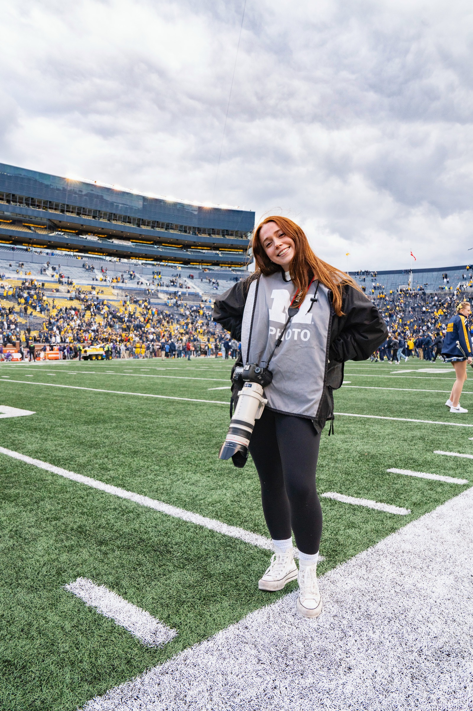
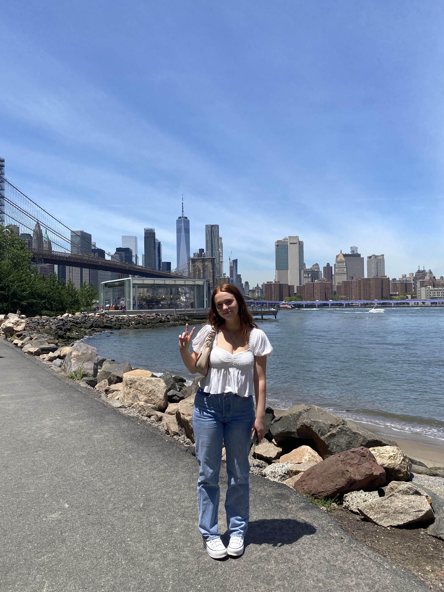
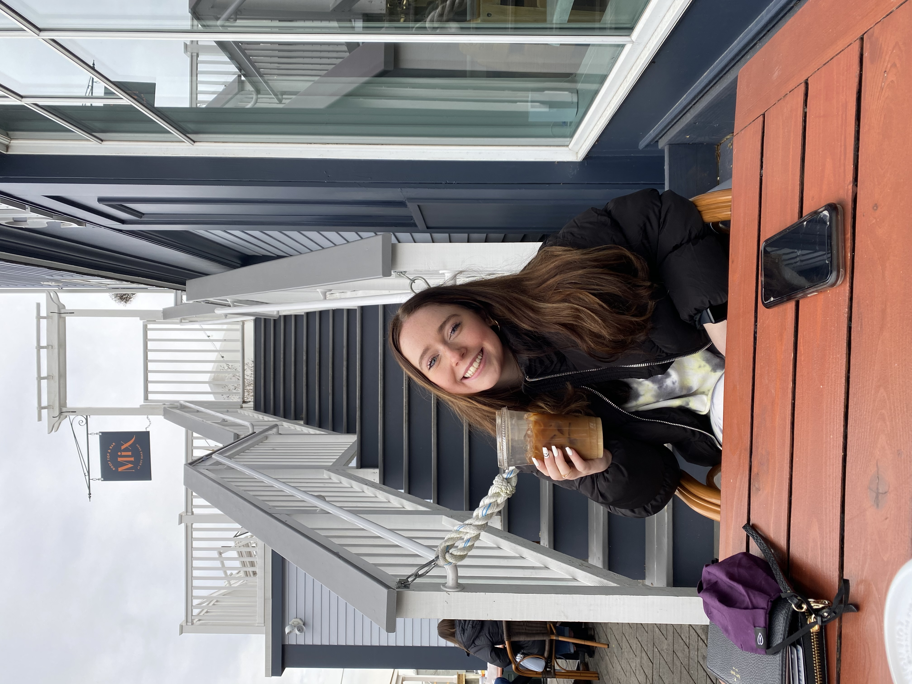

Hover your mouse over the pictures to learn more about me!

Hobbies
I'm a photographer for Michigan Athletics. My favorite sports to photograph are basketball, football, and hockey. You can catch me standing on the sidelines or courtside of most games!

Travel
I travel every chance I get. This summer, I took advantage of "work from home" and traveled all over. My favorite places to visit are NYC, Los Angeles, and Nashville.

Coffee
I love coffee! Everytime I'm somewhere new I try to find a local shop so I can try their coffee. My usual order consists of a dark roast coffee with no cream or sugar or a cappucino.